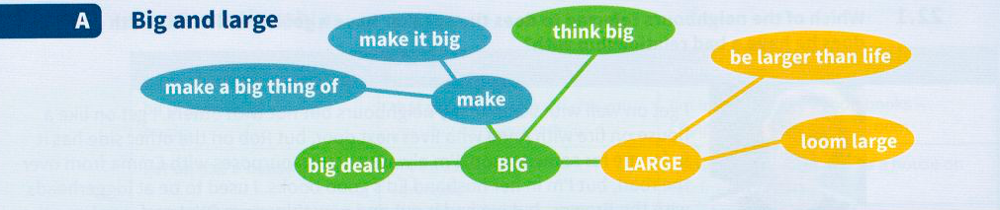

23
Size and position
A Big and large

| example | meaning |
|---|---|
| She's a great singer. She'll make it big one day. | succeed; become famous |
| It's my birthday on Saturday, but I don't want to make a big thing of it, so don't tell anyone. | make it a special occasion; have a big celebration |
| If you're going to invest your money, you should think big. Put twenty thousand into oil shares. | have ambitious plans and ideas, and be keen to achieve a lot |
| So? You won ten pounds on the lottery. Big deal! | said when something happens but you are not impressed/excited, even if others are |
| The characters in his films are always larger than life. | much more exciting and interesting than average people |
| The threat of an earthquake looms large in the lives of the city's inhabitants. | said of something which could happen and which is a huge worry for people |
B Inch, mile and distance
Inch and mile are measurements of distance that are used in the US and are often used in the UK instead of centimetres or kilometres. An inch is 2.54 centimetres, a mile is 1.6 kilometres. Both words are used in many expressions.
Mia:
Is she willing to change her mind?
Jordan:
No, she refuses to budge an inch.
[change her position even a little bit]
Luke:
Are you listening to me?
Anne:
Sorry, I was miles away!
[not concentrating, but thinking about something else]
Tom:
It's obvious Ruth really likes Jack.
Noel:
Yes, you can see/spot that a mile off! Or It sticks/stands out a mile.
[it's very easy to see / obvious]
Dave:
It's a very ugly hotel and the food's awful.
Fran:
Yes, it's a far cry from that lovely hotel we stayed in last year.
[very different from]
C Other related expressions
Tip
Networks can sometimes help you to visualise and remember a lot of information more easily than memorising a list. Try making networks for groups of idioms from different units in this book.